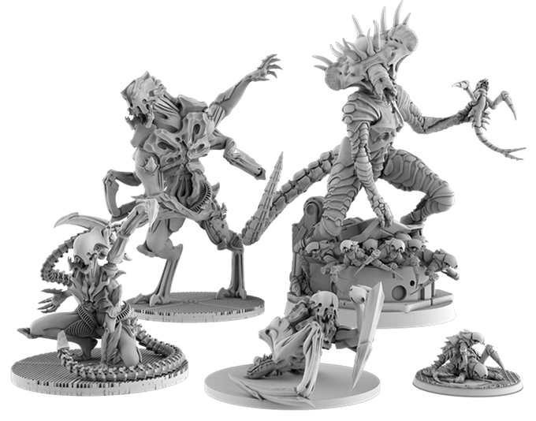
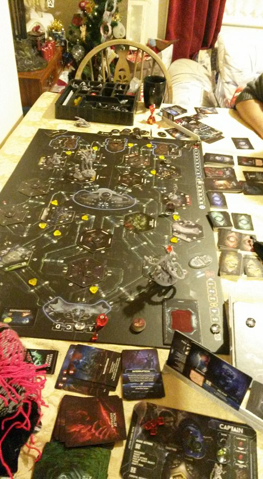
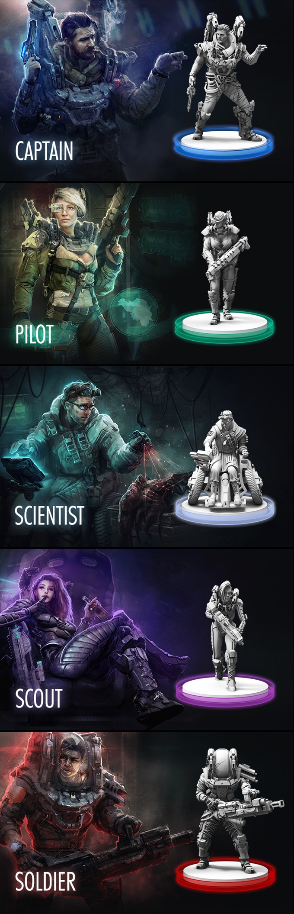
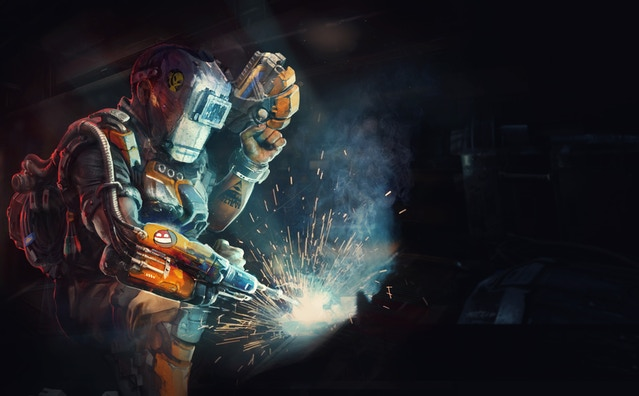
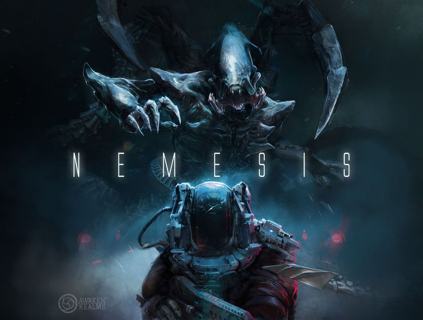
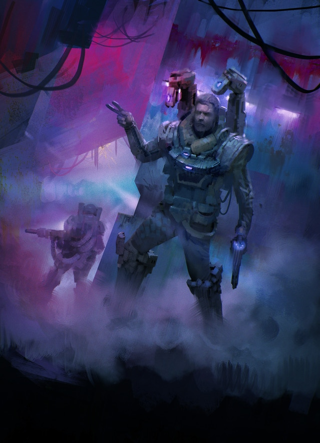

Alarms blaring, the flash of the red warning lights illuminating the hibernation chamber. Still dazed and suffering from temporary memory loss we stumbled out of our pods. I looked around, Captain Chris and Science officer Bruce were also out. But where was John the Bio engineer? As if by reflex I shifted my view towards his pod, only to discover a massive hole in the diamantium glass hatch and his lifeless body on the floor in a pool of blood.

Bruce was the first one to speak up as we stood over the body. We had been in hibernation for so long that I had almost forgotten the sound of his Australian accent. “Crikey, looks like the special didn’t sit well with him.” “This is no laughing matter!” said the Captain as he walked over to the computer and started typing in some commands. “Can’t be sure, but, looks like we’re not alone.”
Before the captain could say more, Bruce walked down the corridor leading to Air Lock Control. I shrugged at the Captain and quickly followed him, thinking I’d better check the engines which happened to be in the same direction. We heard the captain chime in on the voice comms built into our suits. “You two check the engines, I’m heading to navigation in the cockpit.”
Bruce made a lot of noise with his wheelchair as we moved down the corridors. We checked room by room until we reached the communication room. It was at this point that Bruce headed towards the left most engine, Engine one. I told him I would check the middle one, and the one on the right. However, as soon as Bruce was out of sight I punched in my personnel code and powered up the communication dish. I had to get a signal out and tell them we had intruders on the ship.

I typed in the codes and confirmed the transmission, the computer spat out several beeps and bloops confirming the transmission was successful. It was at that point I heard pistol fire from the corridor Bruce had vanished down.
“Frankie boy, we’re not here to fuck spiders, ya know”, yelled the Australian over the comms. I replied, “Bruce what’s going on? I heard weapon’s fire?” “I just carcked this ugly thing, where are you mate? This is a dogs breakfast if I ever saw one.” I did not reply and headed slowly and carefully to the second engine room. Spooked by what I had heard I took my time moving towards the engine room and tried to make as little noise as possible.
It wasn’t long before I reached the second engine, I punched up the control screen. I read “engine malfunction” in big bold red letters. As if in auto pilot I went to work. It did not take me long to find the problem. Just after I finished the repairs I heard the familiar crackle of the voice comms and the Captains voice. “I double checked the destination coordinates and we’re still heading to earth, how’re the repairs on the engines coming along?” I hesitated in replying. What if…, what if they’ve got their own agenda, can I trust them?” I repaired the second engine, heading to the third one now, what about you Bruce?” “Nah, not yet, having a butchers in Fire Control first…wait,…what? Fire control is on fire. I’m on it!” “PPPPPhhhhhssssssshhhtttt” The voice comms cut out to the sound of a fire extinguisher being used.

My mind was racing. Did he start the fire? Is the Captain telling the truth? I let out a deep sigh as I closed the engine room door behind me and made my way silently through the corridor. This time it was the Captain that broke radio silence. He spoke slowly and in a very hushed tone. “I’ve encountered the queen, she’s here in the emergency room ” I stopped walking and listened intently. BLAM “I’ve hit her, I’m retreating, using suppressive fire!!” BLAM Silence fell, only seconds later broken by a clear female sounding computer generated voice. “Escape pod jettisoned, two pods left. Pod statuses, Pod one and Pod two locked.” “Captain? Are you still there? Captain?”, “Yeah I’m here, not feeling too good though, that thing cut me!” I moved on and reached Engine three in quick tempo. I ran diagnostics on the engine. Again, broken. Whatever these creatures are, I was getting the feeling they don’t want us to leave. A while later I heard the satisfying hum of the third engine coming to life as I flicked the lever. “Captain, I fixed the third engine…” “Good I’ll meet you in hibernation…I just need to…….. AAAAAAAAAARGHH “ “Captain?” I yelled over the comms. “It’s in me, it’s in me!” “Captain?!?” The comms fell silent again. I threw caution to the wind and ran through the corridor, I entered the next room and before I knew it the door behind me slammed down with a loud bang. I looked around. Wait, what is this? Eggs, dozens of big pulsating eggs and that smell…

I rushed out of the room and nearly bumped into the Captain. “Sir, what are…, are you alright?” “Yes, yes, I’m fine, just head to hibernation I’ll be right there.” He didn’t have to tell me twice, but as I ran down the corridor and looked over my shoulder I saw the Captain kneel down next to one of the eggs. “Throw another shrimp on the barbie mates, I repaired engine one!” I heard Bruce exalt over the comms. I kept running down the corridor and reached the hibernation chamber. Bruce reached the chamber only moments after me, several minutes later the Captain was in the chamber as well. He looked a real mess, white as a sheet, sweating profusely and what looked like an infected cut across his chest. He was carrying a bulging backpack.
“Boys, I’ll need a quick visit to the surgery before we go back into hibernation. I’m…infected…I did a scan earlier and it’s inside of me. I need to get to the surgery to get it out. The ship will make the jump to earth, as long as you guys took care of the engines? So you two stay here and I’ll take a risk.” He stepped right past the two of us, still clutching the bag.

Just moments later we hear a scream and a sickening squelch echo over the comms. I thought to myself, that was not enough time to reach the surgical room. I looked at Bruce who locked eyes with me and I could see that he thought the exact same thing. I quickly walked over to the room controls and slammed the door leading to the operating room shut. I nodded at Bruce and without words we both started to get ready to enter our pods.

I turned my back to Bruce to look at the hibernation monitor…when I heard a loud metal clang accompanied by a squelching thud. I jerked around, my shotgun at the ready. Out of the corner of my eye I saw the opened technical corridor hatch above one of the pods. A creature double my height, with mandible like claws and a sweeping tail had dropped into the room. I looked down and saw Bruce’s lifeless body and wheelchair underneath. I fired in a frenzy, my bullets hitting the carapace. I heard a loud swishing noise ……. squerch……thud
That was the experience I had while playing the kickstarter game Nemesis. I’ll be right up front and just say what a lot of people might be thinking. Why isn’t this game called Alien? It has the same theme, similar looking monsters and people with their own agendas. I can say however I was pleasantly surprised by this game. I had high expectations for it and they got fulfilled. Although we only played the one game, it was a good experience. The tension was there and the atmosphere was there. In our play we got lucky on the dice rolls a lot! Or I think this might have been more difficult. We also split up almost straight away. I do wonder what will happen if we stay together. But the fact that I’m thinking about these things and that the game beat us the first time we played it only makes me love it more.